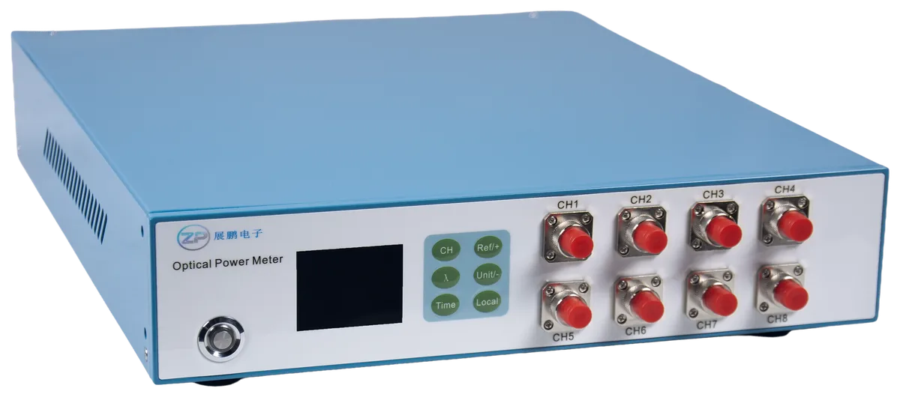

+86 18156228081

D-PMS04A 是一款 4 通道多通道光功率计，测量范围 -50 ~ +15 dBm，工作波长覆盖 800 ~ 1700 nm。 既可用于光功率的直接测量，也可用于光衰减量的相对测量，是光纤通信系统中研究、开发和生产 以及施工、维修等部门必备的基本测试仪器。

D-PMS08A 是一款 8 通道多通道光功率计，在紧凑的台式体积内集成 8 个独立测量通道， 测量范围 -50 ~ +15 dBm，工作波长覆盖 800 ~ 1700 nm。支持多通道并行测量， 是光模块生产测试、光纤通信工程及无源器件检测等场景的理想选择。
| 参数 | D-PMS04A | D-PMS08A |
|---|---|---|
| 通道数量 | 4 | 8 |
| 测量范围 | -50 ~ +15 dBm | -50 ~ +15 dBm |
| 工作波长 | 800 ~ 1700 nm（最小 1 nm 调整间隔） | |
| 最大输入光功率 | 20 dBm | 20 dBm |
| 不准确度 | 5% | 5% |
| 采样间隔 | 20 / 50 / 100 / 200 ms | |
| 功率显示单位 | dBm / dB / mW | |
| 回损 | > 50 dB（典型规格） | |
| 输入光纤接口 | FC | FC |
| 模拟输出接口 | SMA | SMA |
| 模拟输出电压 | 0 ~ 5 V | 0 ~ 5 V |
| 通讯指令 | SCPI 指令 | |
| 远程控制 | 以太网 + 串口 | |
| 电源 | 100 ~ 240V AC, 50/60Hz | |
| 外形尺寸 | 300mm × 350mm × 45mm（台式） | |
| 重量 | 1.2 kg | |
| 工作温度 | 0℃ ~ 40℃ | |
| 存储温度 | -30℃ ~ 60℃ | |
| 相对湿度 | 0% ~ 85%（非结露） | |
订购选型：动态范围 S=Standard（-50~+15 dBm）、H=High（-40~+25 dBm）、L=LOW（-60~+7 dBm）；通道数 04 / 08；封装形式 D=台式、M=模块。